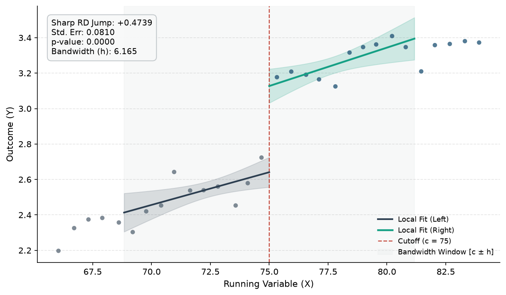

Regression Discontinuity Design (Sharp & Fuzzy)
Scale-invariant CCT MSE/CER bandwidths, robust bias correction, nearest-neighbor VCE, CJM (2020) density test, donut sensitivity, and weak-IV Fuzzy RD AR tests.
1. Sharp RDD with Native CCT Bandwidth, RBC & CJM Density
Quasi's native bandwidth='mserd' and 'cerrd' selectors use Gauss-Legendre boundary moments and scale-invariant derivative-variance regularization. Pairing inference='bias_corrected' with vce='nn' yields Calonico–Cattaneo–Titiunik style robust bias-corrected intervals without requiring external packages (while optional rdrobust_mserd delegation is also available).
import quasi
# Native scale-invariant CCT MSE-optimal bandwidth + Robust Bias Correction + J=3 NN variance
spec = quasi.RDDDesign(
outcome="gpa",
running_var="score",
cutoff=75.0,
bandwidth="mserd", # 'mserd', 'cerrd', 'rdrobust_mserd', or float
inference="bias_corrected", # RBC using p+1 pilot polynomial
vce="nn", # CCT nearest-neighbor VCE ('hc0'..'hc3', 'nn')
diagnostic_covariates=("prior_math",),
)
sharp_res = quasi.estimate(df_sharp, design=spec)
print(sharp_res.summary())
# Cattaneo, Jansson & Ma (2020) local-polynomial CDF density continuity test
cjm = sharp_res.cjm_density()
print(f"CJM Density Test: T = {cjm.statistic_value:.3f}, p = {cjm.p_value:.4f} [{cjm.status.value}]")[EXPERIMENTAL] Research prototype; reference validation pending.
======================================================================
Sharp RDD (Local polynomial) | Outcome: gpa (Cutoff: c = 75)
======================================================================
Local RD Estimate: +0.4739 (SE: 0.0810, experimental_bias_corrected_nn)
p-value: 0.0000
95% Conf. Interval: [0.3152, 0.6325]
Bandwidth (h): 6.1654 (Kernel: triangular, Order: 1)
Effective Sample: 522 / 1,200 within bandwidth
----------------------------------------------------------------------
Identification Checks & Diagnostics:
• Exploratory Density-Jump Screen (not McCrary) [WARN] Log Density Jump = -0.3812 (p = 0.0244)
• Running-variable effective support (descriptive) [PASS] Minimum distinct cutoff-side scores = 245.0000 (-)
• Predetermined covariate continuity: prior_math (exploratory) [PASS] Local discontinuity z (HC0) = -0.3071 (p = 0.7588)
======================================================================
CJM Density Test: T = -0.189, p = 0.8498 [PASS]
c = 75, and shaded confidence bands (generated via sharp_res.plot()).2. Bandwidth, Kernel & Donut-Hole Sensitivity
Check sensitivity across bandwidth multiples, kernel choices, and donut-hole exclusions around the cutoff:
| Specification | h | Estimate | SE | p-value | N_eff |
|---|---|---|---|---|---|
| 0.75x h (Tri, p=1) | 4.6241 | 0.4930 | 0.0860 | 0.0000 | 399 |
| 0.75x h (Epa, p=1) | 4.6241 | 0.5004 | 0.0835 | 0.0000 | 399 |
| 1.00x h (Tri, p=1) [BASELINE] | 6.1654 | 0.4739 | 0.0810 | 0.0000 | 522 |
| 1.00x h (Epa, p=1) | 6.1654 | 0.4711 | 0.0802 | 0.0000 | 522 |
| 1.25x h (Tri, p=1) | 7.7068 | 0.4729 | 0.0790 | 0.0000 | 640 |
| 1.25x h (Epa, p=1) | 7.7068 | 0.4716 | 0.0782 | 0.0000 | 640 |
| Specification | Excluded | Estimate | SE | p-value |
|---|---|---|---|---|
| Donut |x-c| <= 0 (exploratory) | 0 | 0.4739 | 0.0810 | 0.0000 |
| Donut |x-c| <= 0.5 (exploratory) | 32 | 0.5125 | 0.0975 | 0.0000 |
| Donut |x-c| <= 1 (exploratory) | 75 | 0.6264 | 0.1385 | 0.0000 |
3. Fuzzy RDD & Weak-IV Local Anderson–Rubin Test
When crossing the cutoff shifts treatment probability by less than 1, use FuzzyRDD (or supply treatment= in RDDDesign). Because local Wald ratios are sensitive to weak first stages, Quasi includes the Feir, Lemieux & Marmer (2016) weak-IV-robust local Anderson–Rubin test via .ar_test().
# Fuzzy RDD with local Wald RBC linearization & Feir-Lemieux-Marmer (2016) weak-IV AR test
fuzzy_res = quasi.FuzzyRDD(
df_fuzzy, outcome="outcome", running_var="score", cutoff=75.0,
treatment="enrolled", bandwidth="mserd", inference="bias_corrected", vce="nn",
).fit()
print(fuzzy_res.summary())
print("Weak-IV AR test (H0: tau = 0.00):", fuzzy_res.ar_test(null_effect=0.0))
print("Weak-IV AR test (H0: tau = 1.40):", fuzzy_res.ar_test(null_effect=1.40))[EXPERIMENTAL] Research prototype; reference validation pending.
======================================================================
Fuzzy RDD (Local Wald ratio) | Outcome: outcome (Cutoff: c = 75)
======================================================================
Local RD Estimate: +0.8716 (SE: 0.3735, experimental_bias_corrected_nn)
p-value: 0.0196
95% Conf. Interval: [0.1395, 1.6037]
Bandwidth (h): 5.6840 (Kernel: triangular, Order: 1)
Effective Sample: 490 / 1,200 within bandwidth
----------------------------------------------------------------------
Identification Checks & Diagnostics:
• Fuzzy RD First Stage (exploratory) [PASS] Local first-stage Wald F (HC0) = 23.6854 (p = 0.0000)
• Exploratory Density-Jump Screen (not McCrary) [WARN] Log Density Jump = -0.3812 (p = 0.0244)
• Running-variable effective support (descriptive) [PASS] Minimum distinct cutoff-side scores = 228.0000 (-)
======================================================================
Weak-IV AR test (H0: tau = 0.00): stat=2.444, p=0.118
Weak-IV AR test (H0: tau = 1.40): stat=2.057, p=0.1515